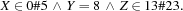
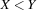
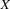
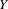
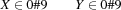
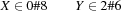
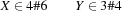
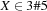

2.3 Spaces, Propagators, and Constraint Stores
The computational architecture for constraint propagation is called a space and consists of a number of propagators connected to a constraint store:

The constraint store stores a conjunction of basic constraints up to logical equivalence. An example for such a conjunction is

The propagators impose nonbasic constraints, for instance,  or  . A propagator for a constraint
. A propagator for a constraint  is a concurrent computational agent that tries to narrow the domains of the variables occurring in .
is a concurrent computational agent that tries to narrow the domains of the variables occurring in .
example of communicating propagators
Two propagators that share a variable  can communicate with each other through the constraint store. To see an example for communicating propagators, suppose we have two propagators imposing the constraints

over a constraint store containing the following information about and :

As is, the first propagator cannot do anything. The second propagator, however, can narrow the domains of both and :

Now the first propagator can narrow the domain of :

Now the second propagator can narrow the domains of both and :

This once more activates the first propagator, which narrows the domain of :

Now the second propagator gets active once more and determines the values of and :

telling a constraint
Given a constraint store storing a constraint  and a propagator imposing a constraint
and a propagator imposing a constraint  , the propagator can tell to the constraint store a basic constraint
, the propagator can tell to the constraint store a basic constraint  if the conjunction
if the conjunction  entails and adds new and consistent information to the store. To tell a constraint to a constraint store storing the constraint means to update the store so that it holds the conjunction
entails and adds new and consistent information to the store. To tell a constraint to a constraint store storing the constraint means to update the store so that it holds the conjunction  .
.
operational and declarative semantics of propagators
The operational semantics of a propagator determines whether the propagator can tell the store a basic constraint or not. The operational semantics of a propagator must of course respect the declarative semantics of the propagator, which is given by the constraint the propagator imposes.
We require that the constraint store be always consistent; that is, there must always be at least one variable assignment that satisfies all constraints in the constraint store.
determined variables
We say that the constraint store determines a variable  if the constraint store knows the value of , that is, if there exists an integer
if the constraint store knows the value of , that is, if there exists an integer  such that the constraint store entails
such that the constraint store entails  .
.
failed propagators
We say that a propagator is inconsistent if there is no variable assignment that satisfies both the constraint store and the constraint imposed by the propagator (e.g.,  over
over  and
and  ). We say that a propagator is failed if its operational semantics realizes that it is inconsistent.
). We say that a propagator is failed if its operational semantics realizes that it is inconsistent.
entailed propagators
We say that a propagator is entailed if every variable assignment that satisfies the constraint store also satisfies the constraint imposed by the propagator (e.g., over  and  ). As soon as the operational semantics of a propagator realizes that the propagator is entailed, the propagator ceases to exist.
). As soon as the operational semantics of a propagator realizes that the propagator is entailed, the propagator ceases to exist.
We require that the operational semantics of a propagator detects inconsistency and entailment at the latest when the store determines all variables of the propagator.
stable propagators
We say that a propagator is stable if it is either failed or its operational semantics cannot tell new information to the constraint store.
failed, stable, and solved spaces
We say that a space is failed if one of its propagators is failed. We say that a space is stable if all of its propagators are stable. We say that a space is solved if it is not failed and there are no propagators left.
propagation order does not matter
When a space is created, its propagators start to tell basic constraints to the constraint store. This propagation activity continues until the space becomes stable. An important property of constraint propagation as we consider it here is the fact that the order in which the propagators tell information to the store does not matter. When we start a space repeatedly from the same state, it will either always fail or always arrive at the same constraint store (up to logical equivalence).